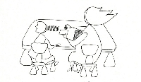

Actualités
L’ensemble de l’équipe pédagogique bénéficie tout au long de l’année de stages de formations continues, de formations internes animées par différents intervenants extérieurs (intervenants Azimut, Stoll, …).
La Crèche Pomme d’Api est extrêmement sollicitée pour accueillir des stagiaires à tout niveau de formation des métiers de la petite enfance. C’est un lieu de rencontres et de réflexions où s’échangent les expériences et les observations.
La Crèche Pomme d’Api souhaite favoriser la communication entre parents et éducateurs sur la base d’une confiance partagée et d’un respect mutuel au nom du bien être de l’enfant.
Afin de construire cette confiance, nous proposons :
- Des réunions collectives au cours de l’année pour parler de l’ambiance ;
- Des entretiens individuels pour parler de l’enfant et de son développement ;
- Des entretiens individuels au cours de l’année à votre demande.
